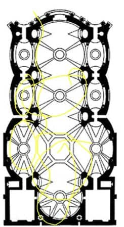
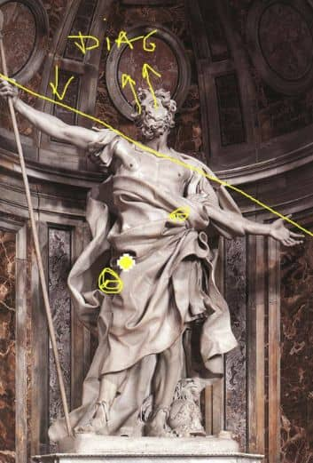
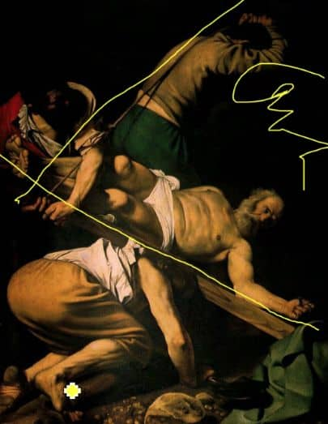

12. Barokní umění a rokoko v evropských zemích
- vznik v Itálii, koncem dominuje ve Francii
- zaměření spíše na Boha a náboženství
- časté reformace (Německo, Švýcarsko)
- BARROCO → nepravidelná perla (Portugalština)
-
30 letá válka (1618-1648)
- rozsáhlý konflikt s brutálními následky
CHRONOLOGIE
- 1600 - 1680 RANÁ
- 1680 - 1730 VRCHOLNÁ
- 1730 - 1780 ROKOKO (POZDNÍ)
ARCHITEKTURA
-
kostel IL GESÚ [:IL DŽEZU:]
- vychází z baziliky
- boční lodě se mění do kaplí
- transept téměř mizí
- široký presbytář
- místo přímky KONVEX KONKÁVNÍ KŘIVKA (vlnovka)
- místo kruhu ELIPSU
- DYNAMICKÉ PRŮNIKY OVÁLŮ
- ve Vatikánu se dostavuje Chrám Sv. Petra

Sochařství
- IN AREA (v prostoru)
- představitel → BERNINI
- rozpažení
- diagonála
- emoce
- vlající draperie
- kontrast mezi tmou a světlem (lesknutí - matnost)
- postavy se dívají nahoru

Malířství
- DIAGONÁLY
- tmavé části obrazu → CHIAROSCURO
- motiv chudých → často špinavé nohy

- významné centrum barokní malby→ ŠPANĚLSKO A NIZOZEMÍ
- CARAVAGGIO, VELÁZQUEZ
-
V Nizozemí se ustalují jednotlivé malířské druhy
-
zátiší
-
vanitas = motiv marnosti a konečnosti
lidského života (lebka, zhaslý plamen,
přesýpací hodiny)
-
portréty
- žánrové výjevy
-
krajinomalby
- Maríny (moře)
- Veduty (města)
Rokoko
- ROKAJ → MUŠLE (FRANZ.)
- větším centrem je Francie
-
do Evropy se dostává porcelán (dříve se použival již v Číně)
- všeobecné zmenšování
- erotické motivy
- malé porcelánové postavičky
Obrázky
-
BORROMINI
- KONVEX KONKÁVNÍ KŘIVKA, OVÁLY
-
APOLLÓN
- IN AREA, DIAGONÁLY, LESKLOST/MATNOST
-
CARAVAGGIO, VELÁZQUEZ a NOČNÍ HLÍDKA (u všech 3 a pak
zvlášť)
- diagonály, chiaroscuro
- CARAVAGGIO → špinavé nohy
-
VELÁZQUEZ → odrážející zrcadlo (inspirace od van
Eycka)
-
skupinový portrét (různé spolky=Gildy) → porovnat s
autoportrétem
Audio